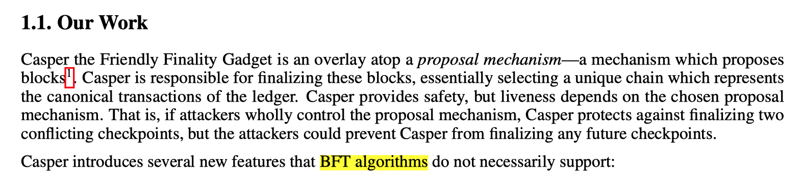

Casper the Friendly Finality Gadget is the consensus mechanism currently used by Ethereum, a type of PoS implementation. This relationship is similar to how Bitcoin uses SHA-256 for mining while Dogecoin uses Scrypt. Other PoS implementations include Cardano’s Ouroboros.
EIP-7251 proposes increasing the staking limit per validator from 32 ETH to 2048 ETH. This change aims to effectively reduce the number of validators and the communication load on the P2P network.
This change is urgent because Ethereum simulated a large number of stakers in a test environment. The test results show that when the number of stakers reaches 2.1 million, the network voting rate drops below 50%, preventing it from reaching a final state. This means the checkpoint mechanism fails, leaving the network in a very insecure state. Ethereum’s current number of validators has already reached 1.4 million. If changes are not made in time, the Ethereum network will collapse in the near future.
Why is Ethereum facing this dilemma? Isn’t PoS a consensus mechanism that can scale to large networks?
The reason lies in the fact that Ethereum Casper is an improvement on BFT, not on PoS.
Let’s first look at how Vitalik describes Ethereum Casper, emphasizing its improvements over BFT:
Now, let’s look at the specific process of Ethereum Casper: nodes stake assets to become validators, and then a node is randomly selected to produce a block through VRF. After the block is produced, all validators vote on the validity of the block. These votes are first submitted to the committee members, who aggregate the votes and then synchronize among themselves. Committee members are randomly elected at intervals.
For those familiar with BFT but not with Ethereum Casper, learning that only blocks receiving 2/3 of the votes can be marked as final may trigger sensitivity to the 2/3 number. This is because 2/3 is the voting ratio emphasized by BFT to ensure 3f+1 fault tolerance.
BFT’s voting mechanism ensures that forks do not occur in the network. Ethereum adopts this advantage of BFT, making handling fork scenarios relatively easy by judging the block with the highest vote rate as the main block. If validators vote for two blocks simultaneously, they are penalized, which is why Ethereum is the only PoS chain with a slashing mechanism. Combined with the checkpoint mechanism, Ethereum can handle very complex fork situations, identifying the main chain even if the network forks into a tree structure.
The problem is that Ethereum Casper, while adopting BFT’s strengths, also inherits BFT’s drawbacks, namely the high communication volume. BFT’s communication volume is O(n2), generally supporting a network of fewer than 100 nodes, as detailed in this report.
We can roughly compare the message volumes of BFT and Ethereum Casper.
BFT at 100 nodes has a throughput of about 50 tps, with message inflation O(n2), leading to a message volume of:
n = (100^2) * 50)
= 500000
= 0.5 M/s
Ethereum Casper with 2 million validators and a 50% voting rate, with a block time of 12 seconds and 64 committees, has a message inflation O(n), resulting in a message volume of:
n = 2M * 0.5 / 12 * 64
= 1000000 / 12 * 64
= 5 M/s
This calculation is rough and imprecise, differing by an order of magnitude, but considering the significant differences in implementation and hardware environments, discrepancies are normal. Overall, the difference is not too large.
Thus, Ethereum’s integration of BFT’s voting mechanism results in a high communication volume. Ethereum Casper improves BFT by incorporating the Stake mechanism, supporting tens of thousands of nodes.
Notably, Ethereum Casper’s message inflation is only O(n) because it requires only one round of voting.
Additionally, the committee mechanism is somewhat similar to the layered consensus of consortium chains. Some domestic companies improve blockchain technology without the token concept, but BFT algorithms can only support dozens of nodes, leading to layered consensus based on BFT. The basic idea is to select a subset of nodes as proposal nodes to produce blocks and vote, while other nodes only receive data. The consensus group (proposal nodes) is rotated periodically.
For consortium chains, VRF + BFT + layered consensus is a relatively complete technical combination.
In contrast, Ethereum adds the Stake mechanism, where each node in a consortium chain is a validator and has a chance to produce blocks, while Ethereum requires staking a certain amount of tokens to become a validator. The committee mechanism, compared to layered consensus, retains the voting rights of each validator, only selecting representatives to aggregate votes. Layered consensus directly deprives most nodes of block-producing rights, leaving it to a few nodes.
Thus, Ethereum’s consensus can be simply understood as Stake + VRF + BFT + committee mechanism.